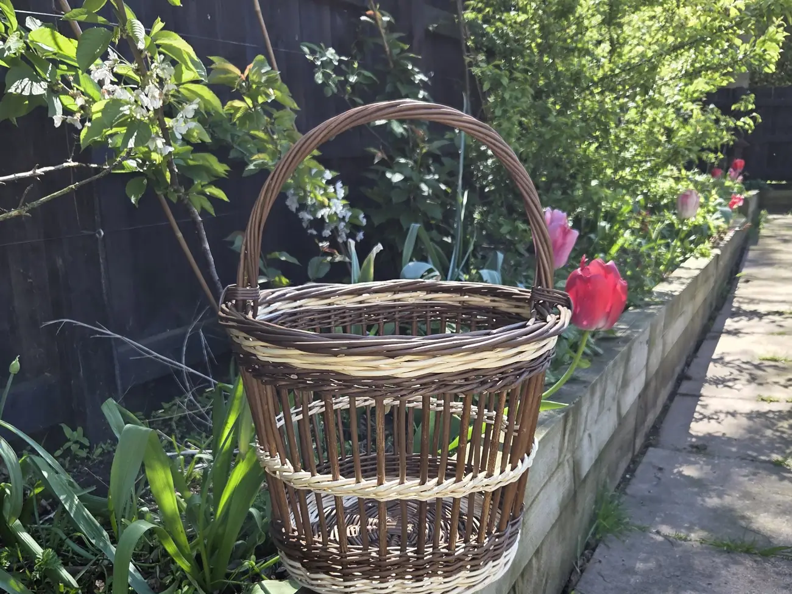
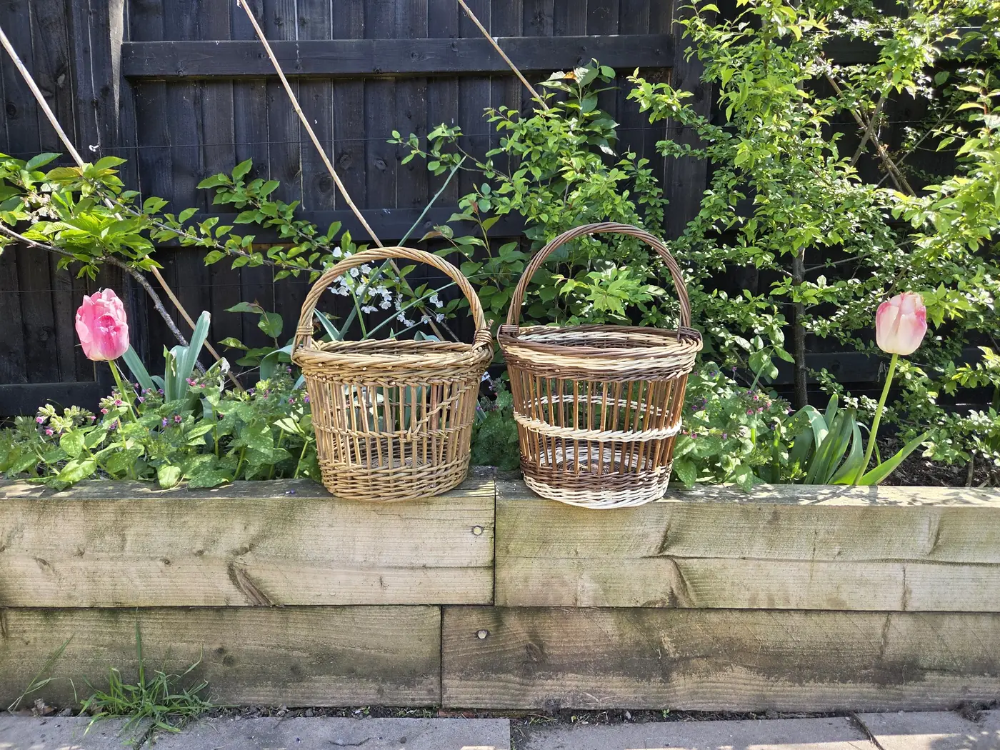
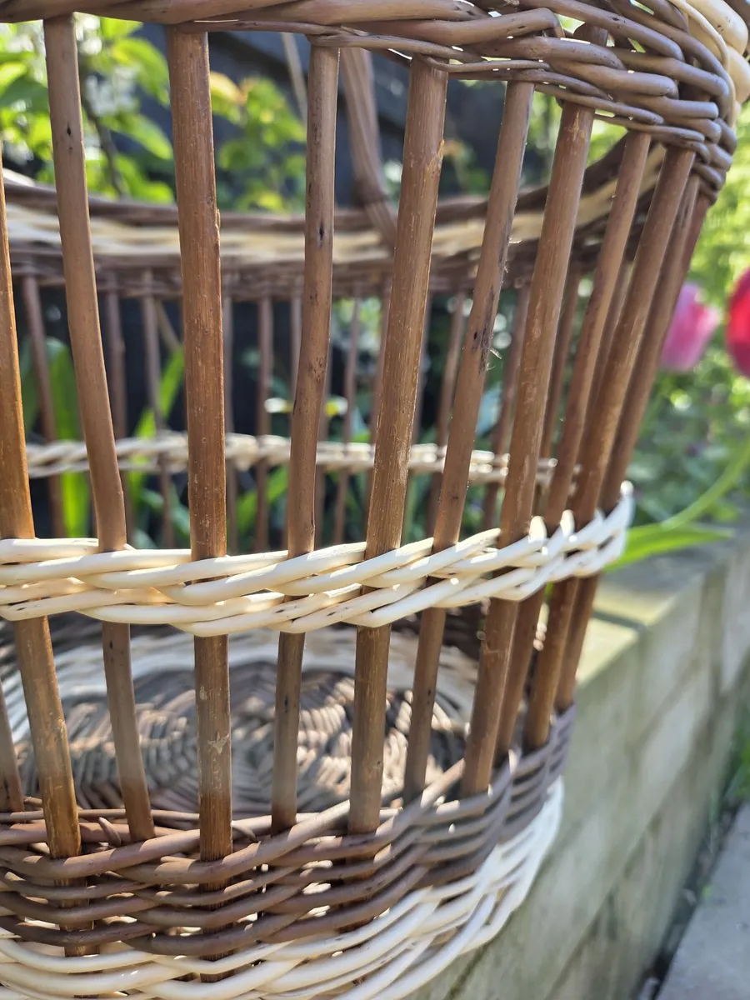
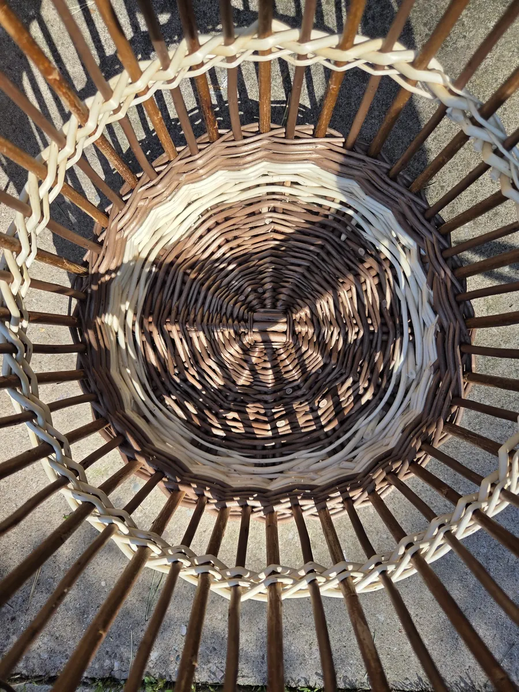
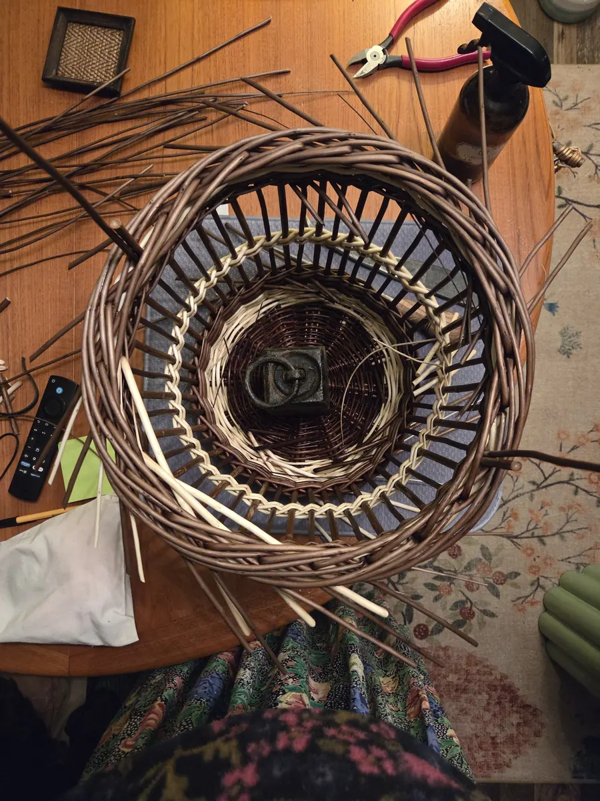
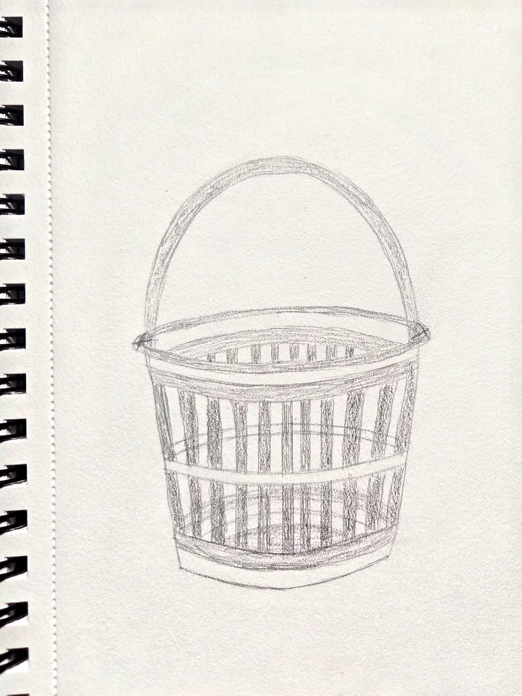
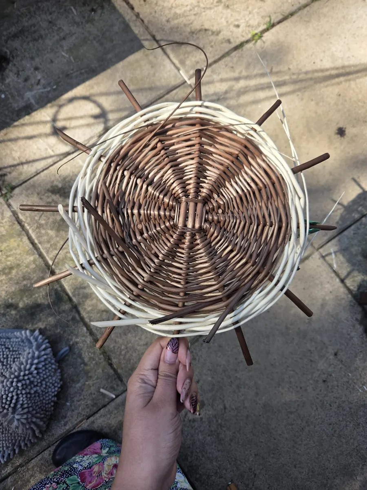
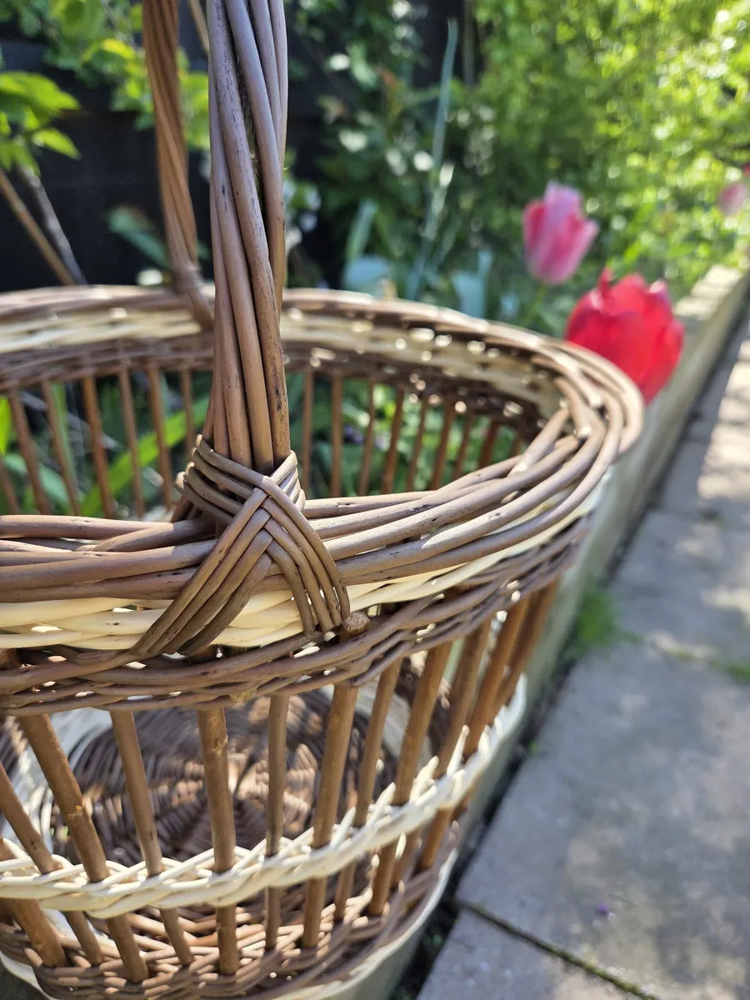

Fake Fitching
How do we make traditional English basketry accessible to more people?
The herring cran, the strawberry basket, the Cornish broccoli crate: they get their look from fitching, worked over an underfoot base. That needs floor space, a posture you hold for hours, and years of practice to keep a line even. They were made by people doing it all day, for money.
This basket is inspired by those traditional baskets, particularly John Cowan’s strawberry baskets. It keeps the open weave and the vertical lines and gets them another way. A wale with thick bye-stakes stands where the fitching would be. A fake foot tries to give it some of the sturdiness an underfoot base would. Simple techniques.
The side stakes are stripped so they can be re-soaked, which is what lets a basket be made across several evenings instead of in a day. It is small enough to live in a small house.
- Materials
- Buff noir, white and Flanders Red willow
- Size
- 35cm across the border, 27cm high
- Made
- 2025
- Technique
- Stake and strand






